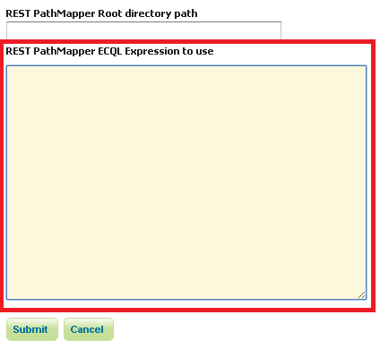

Implementing a REST PathMapper¶
In this section is described how to implement a new RESTUploadPathMapper sub-class. A RESTUploadPathMapper object is used for mapping the path of the uploaded files following new remapping policy. An example could be a Regular Expression remapping based on the input file name.
This is the RESTUploadPathMapper interface:
/**
* Plugin interface used to transform the position of files during rest uploads
*/
public interface RESTUploadPathMapper{
/**
* Remaps the position of a store path. The implementor is free to append, modify
* or replace the store root directory, REST upload will append workspace/store to
* it
*
* @throws IOException
*/
public void mapStorePath(StringBuilder rootDir, String workspace, String store,
Map<String, String> storeParams) throws IOException;
/**
* Remaps the position of a file inside a store (e.g., a image being harvested into
* a mosaic. The implementor is free to alter the item path.
*
* @throws IOException
*/
public void mapItemPath(String workspace, String store,
Map<String, String> storeParams, StringBuilder itemPath, String itemName) throws IOException;
}
Implementation¶
Each implementation must follows these rules:
Remapping of the Root Directory requires to create a final root of the following structure:
${rootDirectory}/workspace/storeDevelopers can choose both the relative path of the file (if it is inside a zip directory structure) and the filename itself.
File remapping cannot return directories.
If additional parameters are required, they can be stored inside the Metadata Map of the Global, WorkSpace or Store settings.
The steps for creating a new RESTUploadPathMapper implementation are:
Extend the base implementation RESTUploadPathMapperImpl and create the desired PathMapper.
Configure it as a Spring Bean inside the applicationContext. For example:
<bean id="ECQLRUPathMapper" class="org.geoserver.rest.ecql.RESTUploadECQLPathMapper"> <constructor-arg ref="catalog"/> </bean>
If any optional parameter requires to be configured, then a GUI panel must be created using Wicket. The panel will be added to the Global and WorkSpace Settings configuration page.
The steps for creating the GUI panel are:
Creation of a new extension of the SettingsPluginPanel class.
Note
Note that this panel must extract the parameters from the Metadata Map of the settings object.
Definition of a Spring Bean which will be an instance of the SettingsPluginPanelInfo class and will have the class defined above as component class (priority property can be avoided). For example:
<bean id="restECQLSettingsPanel" class="org.geoserver.web.data.settings.SettingsPluginPanelInfo"> <description>This bean adds the necessary form fields to REST Settings</description> <property name="id" value="restECQLSettingsPanel"/> <property name="titleKey" value="restECQLsettings"/> <property name="componentClass" value="org.geoserver.rest.web.RESTECQLSettingsPanel"/> <property name="priority" value="1"/> </bean>
Then the result will be added at the bottom of the GeoServer Global Settings and Edit WorkSpace Pages:
